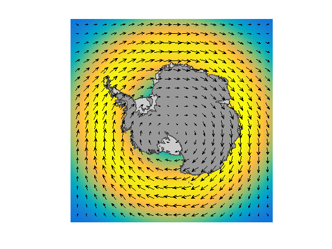
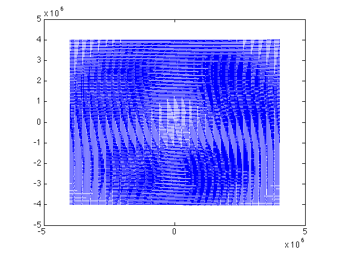
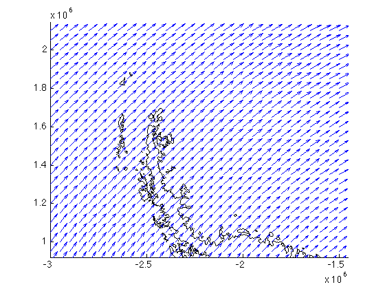

uv2vxvy documentation
uv2vxvy is part of Antarctic Mapping Tools for Matlab (Greene et al., 2017). Click here for a complete list of functions in AMT.
This function transforms georeferenced (zonal and meridional) vector components to cartesian (polar stereographic) coordinate components.
Contents
Syntax
[vx,vy] = uv2vxvy(lat,lon,U,V) [vx,vy] = uv2vxvy(x,y,U,V)
Description
[vx,vy] = uv2vxvy(lat,lon,U,V) transforms zonal U and meridional V components of a vector field to cartesian horizontal vx and vertical vy components. Inputs lat and lon define locations of each point in U and V.
[vx,vy] = uv2vxvy(x,y,U,V) transforms zonal U and meridional V components of a vector field to cartesian horizontal vx and vertical vy components. Inputs lat and lon define locations of each point in vx and vy. Polar stereographic coordinates are automatically determined if any value in the first two inputs of uv2vxvy exceed normal geographic coordinate values.
Example
Let's create an approximate vector field, call it wind. Use psgrid to get a 50 km resolution, 800 km wide grid centered on the South Pole. Then make up some zonal U and meridional V wind speed data and plot it on a map:
[lat,lon] = psgrid('south pole',8000,50); U = 10*ones(size(lat)).*cosd((lat+65)*3).^3; V = 3*sind(lon); speed = hypot(U,V); antmap('northernlimit',-55) pcolorm(lat,lon,speed) bedmap2 'patchshelves' bedmap2 'patchgl' quivermc(lat,lon,U,V,'density',15)
Above initialized a map with antmap, plotted wind speed as a pseudocolor field with pcolorm, laid the outlines of ice shelves and the continent with the Bedmap2 plotting function, and showed the vector field with quivermc. I downsample the field to 15% of its original density to reduce clutter.
close
Those zonal and meridional components can be converted to grid vx and vy components like this:
[vx,vy] = uv2vxvy(lat,lon,U,V);
Now the arrows can be displayed in cartesian coordinates. Get the correct locations for the arrows by
[x,y] = ll2ps(lat,lon);
and plot on cartesian coordinates like this:
quiver(x,y,vx,vy)
Ugh, that's ugly! Too crowded to see much, so let's overlay a Bedmap2 grounding line for context and then zoom in on the Antarctic Peninsula:
hold on bedmap2('gl','xy') axis([-3002352 -1453605 921398 2142910])
Citing AMT
If this function or any other part of Antarctic Mapping Tools is useful for you, please cite the paper that describes AMT.
Greene, C. A., Gwyther, D. E., & Blankenship, D. D. Antarctic Mapping Tools for Matlab. Computers & Geosciences. 104 (2017) pp.151-157. doi:10.1016/j.cageo.2016.08.003.
Author Info
The uv2vxvy function and supporting documentation were written by Chad A. Greene of the University of Texas at Austin's Institute for Geophysics (UTIG), September 2015.